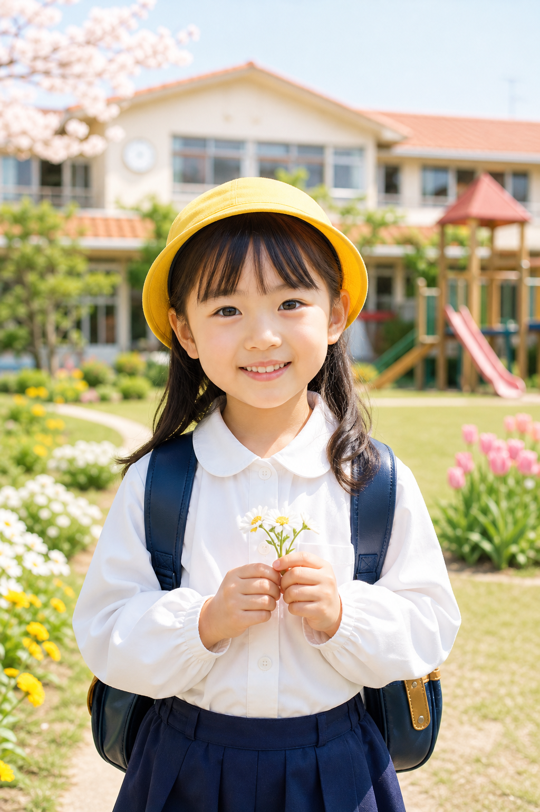
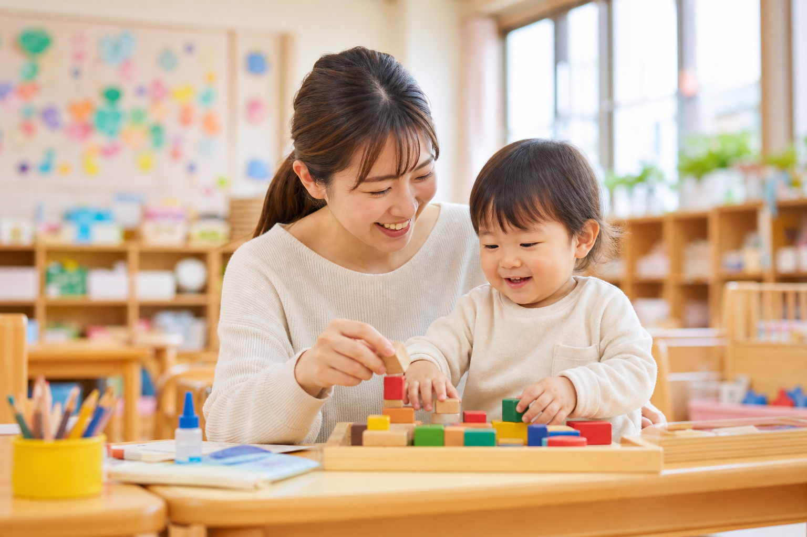
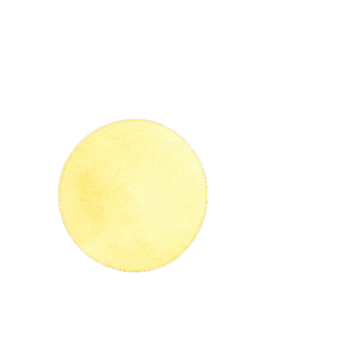
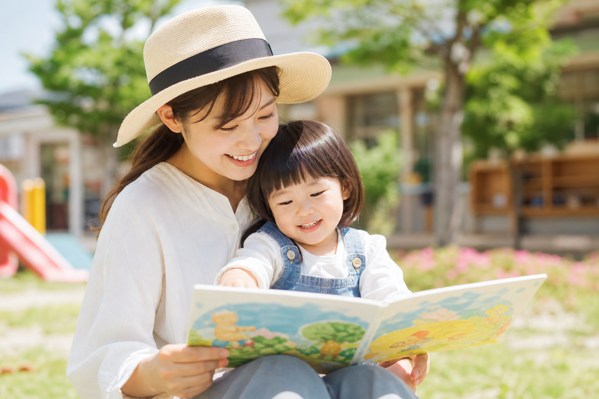
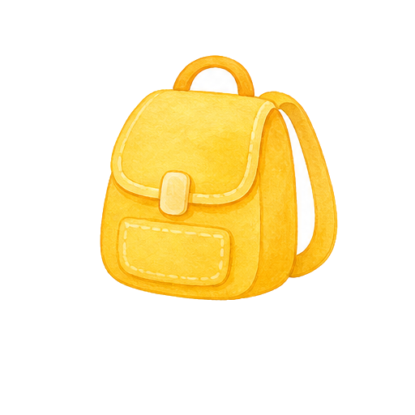

7:30
順次登園・預かり保育
朝の支度を整え、先生や友だちとゆったり過ごします。



朝の支度を整え、先生や友だちとゆったり過ごします。

歌、制作、文字や数、園庭遊びなど、年齢に合わせた活動を行います。

給食を通して、食べる楽しさや食事のマナーを身につけます。

外遊び、絵本、制作の続きなど、落ち着いた時間と遊びの時間を組み合わせます。

通常降園後は、必要に応じて預かり保育へつながります。


早い時間の登園が必要なご家庭向けの導線を掲載します。
降園後のおやつ、遊び、休息の流れを整理します。
夏・冬・春休み中の保育時間や利用条件を掲載します。
1日の中で、子どもたちは遊び・学び・食事・休息をバランスよく経験します。 正課や行事だけでなく、身支度や片付けなどの生活習慣も大切にしています。